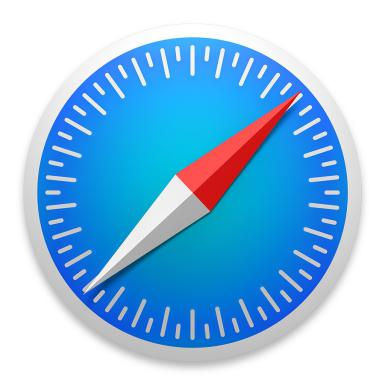

SEGURIDAD: Ofrece seguridad contra software malicioso, “phishing”, entre otras.
VELOCIDAD El objetivo principal de Chrome es la velocidad de navegación, desde su ejecución hasta la carga de aplicaciones web complejas.
PRODUCTIVIDAD: Puedes acceder a tus marcadores, pestañas abiertas e historial desde cualquier dispositivo que sea compatible con Chrome.
COMPATIBILIDAD: Siempre se encuentra en constante crecimiento por parte de sus desarrolladores y desarrolladores externos, esto permite la inclusión de nuevas extensiones para mejorar la compatibilidad con otras aplicaciones.
SIMPLICIDADSimplicidad: Está diseñado para ser lo más sencillo posible, esto te permite centrarte en lo que necesites hacer.
ADMINITRADOR DE TAREAS:Chrome contiene un administrador de tareas que nos indica qué recursos se están consumiendo y en qué páginas.
Internet Explorer
RENDIMIENTO: Las páginas web y las aplicaciones se cargan de forma más rápida y tienen una capacidad de respuesta superior debido al nuevo modelo de objeto de documentos (DOM), un nuevo diseño y el nuevo motor de Chakra JavaScript. El nuevo motor de JavaScript aprovecha los diversos núcleos de CPU a través de Windows para interpretar, compilar y ejecutar códigos en forma paralela.
DISEÑO CLARO La interfaz de usuario de Internet Explorer 9 proporciona, simplemente, los controles necesarios para admitir la navegación básica y, además, desempeña una función de soporte para la página web. Las notificaciones ahora aparecen en la barra de notificación que se encuentra en la parte inferior del explorador web y resultan más fáciles de comprender para los usuarios. La nueva pestaña muestra, de manera inteligente, los sitios web que los usuarios visitan con más frecuencia para que puedan obtener acceso a los sitios web más populares rápidamente. Un cuadro le ofrece a los usuarios un único lugar para visitar sitios web específicos y buscar en la web mediante su proveedor de búsqueda favorito. Las pestañas desplazables permiten que los usuarios usen funciones simples, como arrastrar y colocar para abrir pestañas en nuevas ventanas o ajustarlas a los bordes de la pantalla en Windows 7.
SEGURIDAD Internet Explorer 9 es el único explorador web reconocido que brinda una reputación de descargas integrada y que ayuda a los usuarios a tomar mejores decisiones en el momento de confiar en un archivo de programa descargado. Ambas funciones están activadas de forma predeterminada.
Safari 
SEGURIDAD: La privacidad y la seguridad son esenciales para todos. Por eso Safari incluye funcionalidades que protegen tu privacidad y mantienen tu Mac seguro. Por ejemplo, Safari te da la opción de buscar en Internet con DuckDuckGo, un motor de búsqueda que no registra tu información.
SAFARI READER: lectura en modo texto, sin publicidad.
DESARROLLADORES: Safari está integrado en WebKit, el motor de renderización de código abierto líder en la industria. Incluye potentes herramientas, como el inspector web, que permiten a los desarrolladores crear aplicaciones web avanzadas. Además, sigue siendo compatible con las tecnologías que favorecen la innovación.
WEBKIT como motor de renderizado.
FIREFOX

PROTECCIÓN ANTIPHISHINGLa protección antiphishing lleva la seguridad de Firefox a un nuevo nivel, ayudando a proteger tu información bancaria y protegiéndote del robo de identidad. Cuando encuentres una página web que sea sospechosa de fraude (también conocido como phishing) Firefox te advertirá y te ofrecerá una página de búsqueda para encontrar la página web que realmente estabas buscando.
MARCADORES DINÁMICOS Los marcadores dinámicos de Firefox te permiten ver los canales web, noticias o titulares de un blog desde la barra de marcadores o desde el menú. De un vistazo, puedes revisar las últimas noticias de tu web favorita y hacer clic para ir directamente a los artículos que te interesan.
PROTECCIÓN Protección contra programas espías, Firefox no permitirá que una página web descargue, instale, o ejecute programas en tu ordenador sin tu consentimiento explícito. Serás avisado siempre que descargues o instales software, y Firefox siempre te dirá que está sucediendo para que así tengas el control de tu ordenador.